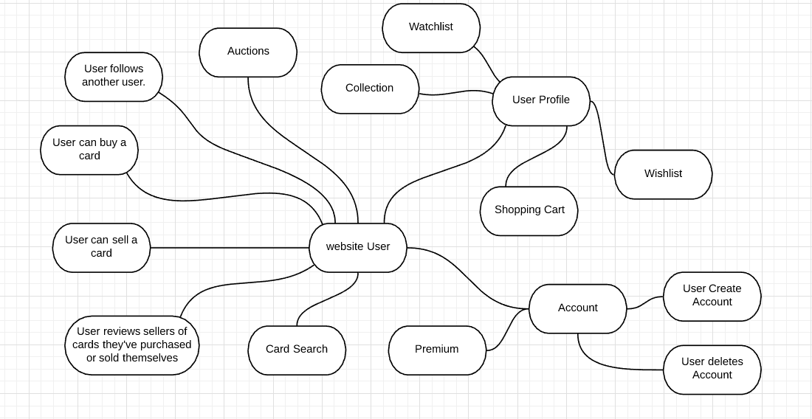

Table of Contents
Declaration
Acknowledgements
Abstract
List of Abbreviations
Chapter I Introduction
Overview
Problem statement
Project Objectives
Scope and the limitations
Methodology
Chapter summary
Chapter II Background
Overview
Technology overview
Background of study
Conceptual framework
Chapter summary
Chapter III Design and implementation
Overview
Design
Sprint planning
Implementation
Chapter summary
Chapter IV Results and evaluation
Overview
Results
Backlog grooming
Sprint report
Retrospective
Evaluation
Chapter summary
Chapter V Conclusions
Conclusions
Future work
References
Appendices
List Of Abbreviations
UI - User Interface
UX - User Experience
MVC - Model View Controller
API- Application Programming Interface (API)
JS(javascript)- JavaScript (JS)
AJAX- Asynchronous JavaScript and XML.
MVP - Minimum Viable Product
IDE - Integrated development environment
Introduction
Overview
Our capstone project is a website that provides a free platform for buying and selling popular trading cards, starting with Yu-Gi-Oh!. We also provide a point of difference compared to similar sites as we have special one minute ‘blind auctions’, as explained in the abstract.
Problem statement
The problem that we are helping to solve is that current platforms/websites for buying and selling trading cards are very expensive to use as they usually charge fees for simply using their website. Other problems include, taking a longer time to reach users who do not live close to the country where the cards are sold and do not have user-friendly UI and or UX.
Project objective
The objective of our project was to create a platform where users can buy or sell trading cards for free, essentially taking out the ‘middle-man’ with the optional premium service to have them checked if the cards are authentic or fake. This was the product asked for by our product owner.
Scope and limitation
The scope of our project was to create an easy to use and functional platform
for users to buy and sell cards. This website would also allow users to follow
other users, add any card to their wish list or collection, upload their own
listings, add other users cards to their watch list or shopping cart, and place
a bid on a current auction running.
Users should also be able to receive notifications when they create an account,
when someone buys their listing or lists a card in their wishlist, when someone
follows them or requests to trade with them, when you win or lose an auction,
when someone removes or edits a listing in your shopping cart or watch list, when
a purchased card has been successfully verified and when the shipping process
has been started.
Users can also send an email to us using the contact us page.
Some limitations include, time, resources, knowledge, and skill set variation.
Time was a limitation because our team had a large skill gap between our members
causing some members to pick up larger workloads to compensate. Another reason
was lack of contribution from team members which also required others to work on
extra tasks taking time away from their own. This was required to meet deadlines.
The skill gap also caused members to lose time while they assisted other members.
Resources were a limitation due to no outside funding. This stopped us from making
use of faster and more reliable software and hardware.
Another constraint we have is that the website is mainly for people who reside in
New Zealand as they benefit the most, while overseas users would end up having the
same initial problem as shipping costs of the cards would increase as well as the
time it took to reach them.
Methodology
Our approach to solving the problem is by providing a free local platform for trading card users to be able to purchase and sell their cards, ideally within New Zealand as we are much cheaper to use than similar overseas platforms and we will be faster with shipping and provide a nice difference with our ‘blind auctions’.
Chapter summary
The outcomes of our completed MVP (Minimum Viable Product) for our project show that although there are many features still to be added to the whole project, overall we were able to accomplish most of what was planned despite some limitations and constraints and gained experience with collaboration of working in a team with members of varying skill levels.
Background
Overview
We will use our website to create a brand and make money through ad revenue, monthly subscriptions and card verifications. We will use this platform to learn how to manage a company along with income and taxes. We hope to learn a lot of valuable information about building a project in a team environment, running an e-commerce website, business models, and using the agile methodology.
Technology overview
The technologies we used include the following, Coggle, Lucidchart, Visual
Studio 2017 and 2019, Visual Studio Code, Jira and Azure DevOps, Entity
Framework, MSSQL, GitHub, GitKraken and Github Desktop, Two different
Yugioh APIs, Stripe API, SmarterASP, 1stdomains, JavaScript, JQuery and AJAX,
and C#.
The reason we chose to use these tools, applications, languages and IDEs
are based on familiarity. Our team had all used these technologies and
would not have to spend much time learning how to use them in a different
project. We specifically chose to use Stripe as opposed to Paypal because
they were easier to setup and took a smaller cut from each transaction.
As with the other two APIs used, we chose them based on ease of use, free
for all to use and they had all the data we needed.
Background of study
The existing solutions currently only undercut other businesses using the same principles, but with cheaper prices, however, our idea is to be completely free of any charges. Our product owner is our stakeholder. Constraints could be language barriers, global expansion, copyright issues and colour scheme for visually impaired.
Conceptual framework

Chapter summary
We chose to make this website with its current business model because in the trading card industry it does not exist yet. All other solutions currently available come with fees attached and we wanted to remove that. By removing the middleman we allow both parties to profit as the seller will be able to sell for the price he wants and the buyer is able to buy the card for what it’s worth.
Design and implementation
Overview
Our design, strategy, plan, coding, implementation, testing and debugging described
in detail with step by step instructions.
Design
To use the website, our system requires a user to navigate through pages, and use drop down lists, buttons, modals, checkboxes and input textboxes for the functionality of the site. (See Appendix A, Appendix B, Appendix C) The software we use supports our outlined business model by being user friendly and adhering to the target audience as requested by the product owner. The datatypes used include a User with many properties and other classes linked to this main class such as wishlist, watchlist, shopping cart, and collection. Some algorithms we implemented were; finding 10% of the total price of a card in order to meet the requested verification price, using for each loops to add every entity needed for a view.
Sprint Planning
After we finish mapping out our capstone project scope, we will research all the features and how we will implement each task. After we complete researching each feature, our team and product owner will discuss what features are required for our MVP. We will then add all our user stories, features and epics to our backlog along with story points which we will decide on together. Each user story will also get assigned a priority and a risk variable. Next we will define the acceptance criteria for each user story and make sure it meets the INVEST criteria. Once we have added everything to our backlog, we will add the highest priority features to our first sprint. These are tasks that we need done first to be able to start working using the agile methodology.
Implementation
To create our website, we first started by planning how the website would work using
coggle and how our data would interact together using lucidchart. We then designed and
linked our classes to create our database. Next, starting a local project which we
shared across the team by using source control to work on individual tasks using the
Agile methodology. After planning out our tasks using Azure DevOps, we made researched
estimates on how long tasks could take and how difficult they would be. Later assigning
each user story to a member whose skill set suit the task best; Aiming to have even workloads.
Once we finished the majority of our Epics and Stories, we began creating all the controllers
for the appropriate models and made views based off CRUD procedures as well as using APIs
using the technologies mentioned in the abstract, which took the most time. Once we had a
working MVP, we had decided to upload our project online to be tested by users.
We used the ASP.NET MVC web structure for our method of creating the website. The framework
we used was Entity Framework Code First Migrations so that we could easily implement version
upgrades, or downgrade them to the last working version if required.
For source control, different team members used different applications for the pushing and
pulling of data but the host was on SmarterASP.
We used these technologies because these were the ones that we had learnt and had the most
experience through previous projects.
Chapter summary
In summary, our design and implementation was carefully researched prior to creating the designs
so that we would likely have less problems to deal with later on, avoiding any bugs earlier on
in the project.
Once the designs were implemented, we found that there were only minor issues that were quickly
dealt with thanks to the efficient use of technology we decided to use. Most of what we planned
for the design ended up coming to be what we wanted and even with extra features to further
improve upon the UI and UX of the overall project.
A large part of this was made to be a lot easier by making use of the two APIs that we found
while researching resources to cut down on manual work, such as the data from 10,000 different
cards which would have normally taken a lot longer to do.
Overall, we feel that we had obtained the planned designs that were set prior to implementing them.
Results and implementation
Overview
We will discuss our results and evaluate our achievements accomplished during our given time frame.
Results
Our goal was to be able to buy a card from another user without a middle man. We managed to complete our goal within the time given along with multiple other core components that go into making a responsive and interactive website. We were able to create a functional auction feature along with our e-commerce website.
Backlog grooming
During the course of our project life cycle we went through multiple backlog grooming sessions. These occurred every 2-3 weeks between our product owner and all other group members. Changes we made to our backlog included iteration checks of all features to be added each sprint. As team members came up with features to be added to the project, we would try to fit them into the next sprints while also making sure that they do not exceed the amount of time required for the sprint. For any items in the backlog that were not completed during the assigned sprint, they would get moved into the next sprint with a higher priority starting with those tasks at the top of the new sprint.
Sprint Report
We had 5 sprints each lasting 2 weeks starting in Early April. Each bar represents
the amount of story points completed during each sprint. (See Appendix E)
We started off quite well as we were very motivated to start working on a new
project together and got a lot of work done. This sprint included a lot of backend
setup including, setting up all of our classes and linking them respectively. Creating
our database and setting up basic user actions. While we were able to complete our stories
based on our user efficiently, we had some trouble incorporating our two yugioh APIs into
our project.
Entering into our second sprint we still struggled to complete user stories related our
API’s and couldn’t complete all stories on time which led to having a lower amount of
work being turned in.
In our next sprint we still had small issues but were able to turn in a few high
difficulty point stories and a lot of the scheduled work (Not including unresolved
user stories from previous sprints.)
In our fourth sprint, we began to approach our final deadline causing everyone to come
together and finish all assigned user stories from this and previous sprints. Our team
managed to complete over 80 story points due to working harder and smarter. We were also
able to move our database online as well as creating a live running website.
Our current sprint also has a lot of user stories that we managed to resolve before our
final capstone project deadline.
Retrospective
Sprint 1: We started off very well with all team members having a clear understanding of the
general outline of the product. We could have improved on having more feasible rated story points
for certain tasks. Next time we would like to make more accurate estimates on the difficulty of
some tasks.
Sprint 2: We had completed some more of the MVP for our project, however this time we under-estimated
the amount of work to be done and could have balanced this sprint a lot better but this was
largely due to struggling with unfamiliar APIs. Next time we hope to get a more balanced collections
of story points and get more tasks resolved after seeing how the first two sprints went.
Sprint 3: Although not as many stories were handed in as we could have, we managed to hand in
higher value stories which further helped to complete the MVP as set out by the product owner. We
could have improved on resolving more of the smaller features for a better total sprint outcome.
Next time we aim to get the full MVP completed to leave time for the other features as extras depending
on how much time is left over.
Sprint 4: In this sprint we had finally managed to complete the entire MVP. We would like to have improved
on possibly fitting in even more features and checking and testing for bugs. In the next sprint, which is
due after the deadline, we hope to clear out these existing bugs before adding any new features in order
of priority.
Evaluation
Our website is operating as planned but still has some features to add and small
hanges to be made. If we had more time we would be able to fix a lot of these minor
but noticeable bugs. Although we have these minor problems, our website still manages to solve its purpose.
From our extensive research we found that our website is up to 50% cheaper
than other online auction sites in our market location. (see Appendix D) We also include
more features that would be very useful to the target audience. Lastly we
are the only site that do blind auctions which we believe will be a big selling feature.
Chapter summary
In summary, we have accomplished our main goal of creating an e-commerce website targeted towards yugioh card traders and collectors. We believe we have done enough to stand out and from other vendors and provide the perfect platform for users to stay with us.


{kind=link}